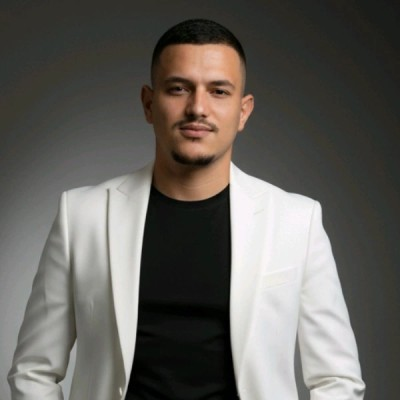
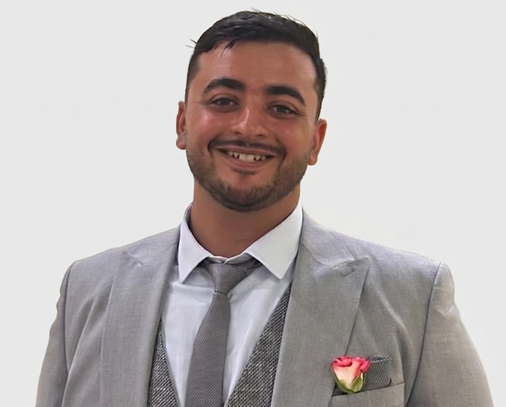
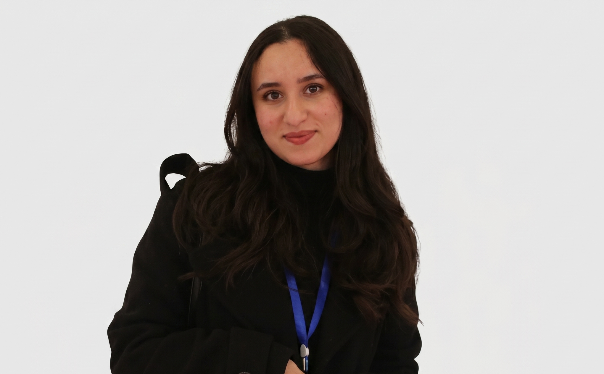

À propos de Nahlaعن نحلة
L'équipe, la vision et l'impact derrière la plateforme d'intelligence apicole.الفريق والرؤية والأثر وراء منصة الذكاء النحلي.
Construits sur le terrain,
pour le terrain.بُنينا في الميدان،
من أجل الميدان.
Nahla est née d'une frustration simple : voir des apiculteurs de talent perdre des saisons entières à cause d'informations introuvables.نحلة وُلدت من إحباط بسيط: رؤية نحالين موهوبين يخسرون مواسم كاملة بسبب معلومات غير متوفرة.



De la Tunisie au monde arabe.من تونس إلى العالم العربي.
Un déploiement progressif, validé étape par étape.انتشار تدريجي، مُحقّق خطوة بخطوة.
Tunisieتونس
Un marché de 13 000 apiculteurs sans outil de données. Nous sommes premiers.سوق 13,000 نحّال بدون أداة بيانات. نحن الأوائل.
2025 – 2026Maghrebالمغرب العربي
Algérie, Maroc, Libye — même culture, mêmes problèmes, même modèle. Prêt à dupliquer.الجزائر، المغرب، ليبيا — نفس الثقافة، نفس المشاكل، نفس النموذج. جاهز للتكرار.
2027 – 2028MENAالشرق الأوسط وشمال أفريقيا
Une plateforme de données environnementales pour l'agriculture du monde arabe — qui commence par l'apiculture.منصة بيانات بيئية للزراعة في العالم العربي — تبدأ بتربية النحل.
2029+Un impact qui dépasse la ruche.أثر يتجاوز الخلية.
Des revenus que les apiculteurs ne perdent plusإيرادات لم يعد النحّالون يخسرونها
Un apiculteur avec 50 ruches peut économiser jusqu'à 1 200 TND en carburant et récupérer 2 à 3 kg de miel supplémentaires par ruche et par saison.نحّال يملك 50 خلية يمكنه توفير حتى 1,200 دينار وقوداً واسترجاع 2 إلى 3 كغ عسل إضافي لكل خلية في الموسم.
Des forêts du Nord-Ouest mieux préservéesغابات الشمال الغربي أفضل حماية
En guidant les apiculteurs vers des zones optimales, Nahla réduit la surcharge de ruches dans les forêts sensibles du Nord-Ouest tunisien et favorise une pollinisation mieux répartie.بتوجيه النحالين نحو المناطق المثالية، تقلّل نحلة الضغط على غابات الشمال الغربي الحساسة وتعزز تلقيحاً أفضل توزيعاً.
L'apiculteur rural accède aux mêmes données que l'agronomeالنحّال الريفي يصل لنفس بيانات المهندس الزراعي
Un apiculteur de Jendouba accède désormais aux mêmes données environnementales qu'un agronome équipé — depuis un simple smartphone Android en 3G.نحّال من جندوبة أصبح يصل لنفس البيانات البيئية التي يملكها مهندس زراعي مجهّز — من هاتف أندرويد بسيط على شبكة 3G.
La couche d'intelligence
de l'apiculture régionale.طبقة الذكاء
لتربية النحل الإقليمية.
Nahla évolue d'un outil d'aide à la décision vers une infrastructure intelligente de l'apiculture connectée.نحلة تتطور من أداة دعم قرار إلى بنية تحتية ذكية لتربية النحل المتصلة.
Extension régionaleتوسّع إقليمي
Déploiement progressif en Tunisie puis expansion vers le MENA, où l'apiculture transhumante est fortement pratiquée.انتشار تدريجي في تونس ثم التوسع نحو الشرق الأوسط وشمال أفريقيا.
Apiculture prédictiveتربية نحل تنبؤية
Savoir avant tout le monde où la miellée sera abondante cette saison — et arriver le premier. C'est là où nous allons.معرفة قبل الجميع أين سيكون الرحيق وفيراً هذا الموسم — والوصول أولاً. هذا هدفنا.
Marketplace de pollinisationسوق التلقيح
Réseau B2B connectant apiculteurs et agriculteurs pour des services de pollinisation optimisés et monétisés.شبكة B2B تربط النحالين والمزارعين لخدمات تلقيح محسّنة ومربحة.
Plateforme de données agricolesمنصة بيانات زراعية
Une infrastructure de données environnementales intelligente, intégrant satellite, météo et terrain — au service de toute l'agriculture.بنية بيانات بيئية ذكية تدمج الأقمار الصناعية والطقس والميدان — لخدمة كل الزراعة.
Réseau apicole intelligentشبكة نحلية ذكية
Une base de données collective où chaque apiculteur améliore le système en partageant ses observations terrain.قاعدة بيانات جماعية حيث كل نحّال يحسّن النظام بمشاركة ملاحظاته الميدانية.